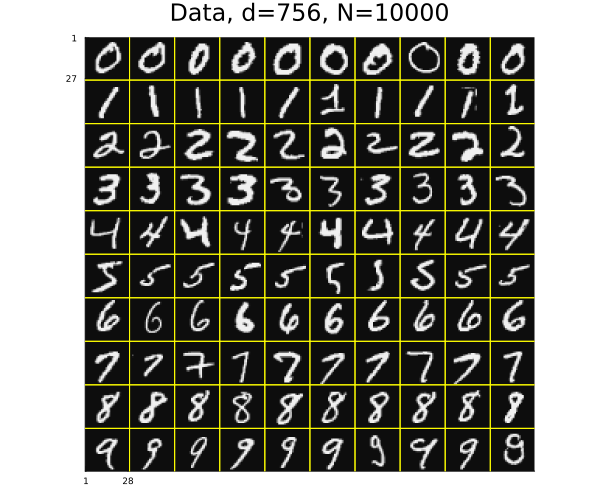
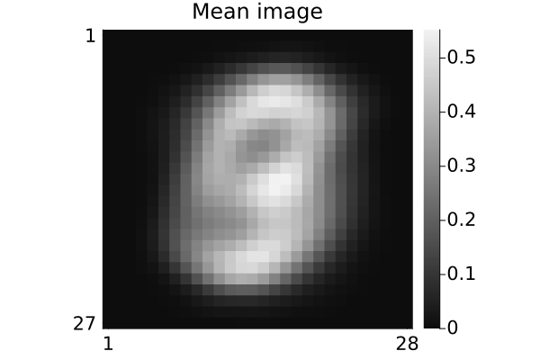
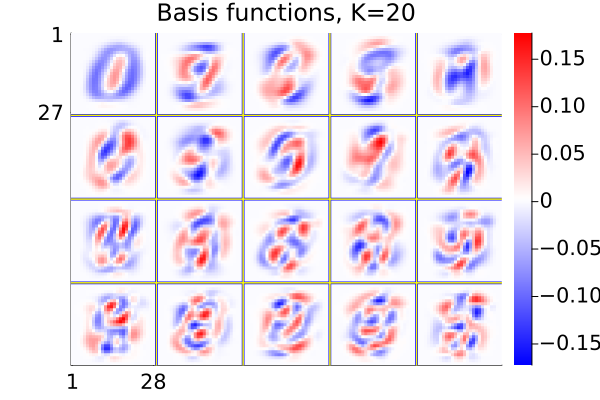
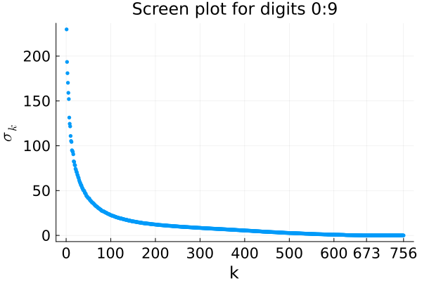
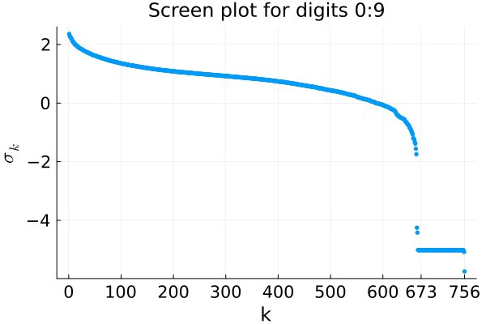
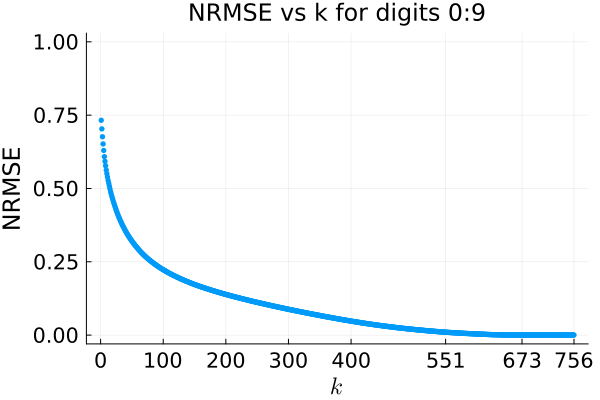
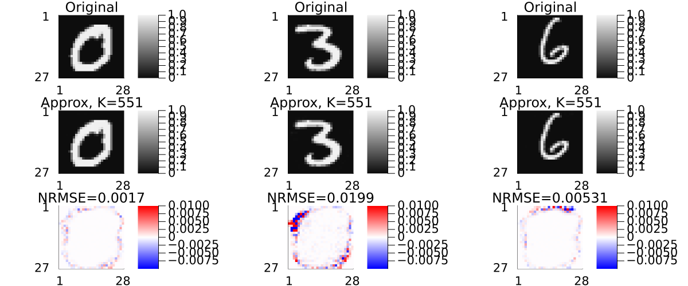

PCA for MNIST digits
Illustrate Principal component analysis with MNIST hand-written digit images in Julia.
This page comes from a single Julia file: eigendigit.jl.
You can access the source code for such Julia documentation using the 'Edit on GitHub' link in the top right. You can view the corresponding notebook in nbviewer here: eigendigit.ipynb, or open it in binder here: eigendigit.ipynb.
Setup
Add the Julia packages used in this demo. Change false to true in the following code block if you are using any of the following packages for the first time.
if false
import Pkg
Pkg.add([
"InteractiveUtils"
"LaTeXStrings"
"LinearAlgebra"
"MIRTjim"
"MLDatasets"
"Plots"
"Statistics"
])
endTell Julia to use the following packages. Run Pkg.add() in the preceding code block first, if needed.
using InteractiveUtils: versioninfo
using LaTeXStrings: @L_str, latexstring
using LinearAlgebra: svd, norm
using MIRTjim: jim, prompt
using MLDatasets: MNIST
using Plots: default, gui, savefig, RGB, cgrad, twinx
using Plots: plot, plot!, scatter, scatter!, histogram!, contour!
using Statistics: mean
default(); default(markersize=3, markerstrokecolor=:auto, label="",
tickfontsize=14, labelfontsize=16, legendfontsize=16, titlefontsize=16)The following line is helpful when running this file as a script; this way it will prompt user to hit a key after each figure is displayed.
isinteractive() ? jim(:prompt, true) : prompt(:draw);Load data
Read the MNIST data for some handwritten digits. This code will automatically download the data from web if needed and put it in a folder like: ~/.julia/datadeps/MNIST/.
if !@isdefined(data_test1)
digitn = 0:9
digit_str = "$digitn"
isinteractive() || (ENV["DATADEPS_ALWAYS_ACCEPT"] = true) # avoid prompt
dataset_train = MNIST(Float32, :train)
nrep = 1000 # how many of each digit
# helper function to extract the `pick` examples of digit n from `set`:
fun1(n, set, pick) = set.features[:,:,findall(==(n), set.targets)[pick]]
fun2(set, pick) = cat(dims=4, (n -> fun1(n, set, pick)).(digitn)...)
data_train = fun2(dataset_train, 1:nrep)
data_test1 = fun2(dataset_train, nrep .+ (1:nrep))
labels = vcat([fill(d, nrep) for d in digitn]...) # to check later
nx, ny, nrep, ndigit = size(data_train)
data_train = data_train[:,2:ny,:,:] # make images non-square to force debug
data_test1 = data_test1[:,2:ny,:,:]
ny = size(data_train, 2)
size(data_train) # (nx, ny, nrep, ndigit)
end(28, 27, 1000, 10)Look at some of the image data
pd = jim(data_train[:,:,1:10,:], "Data, d=$(nx*ny), N=$(nrep*ndigit)";
colorbar = nothing, size = (600,500), tickfontsize = 6, ncol = 10)
# savefig(pd, "pca$digit_str-digit.pdf")
Sample mean of all training images:
dmean = sum(data_train, dims = 3:4) / nrep / ndigit
pm = jim(dmean; title="Mean image")
# savefig(pm, "pca$digit_str-mean.pdf")
Some pixels are always zero:
n0 = count(==(0), dmean)83PCA-based dimensionality reduction
X__mean = reshape(data_train .- dmean, nx*ny, :) # remove mean, unfold
U, sigma, _ = svd(X__mean);Show a few basis vectors
K = 20
tmp = reshape(U[:,1:K], nx, ny, K)
pu = jim(tmp; nrow=4, title="Basis functions, K=$K", color = :bwr,
colorbar_ticks = [0])
# savefig(pu, "pca$digit_str-basis-$K.pdf")
Screen plots
non-log scale:
ps = scatter(sigma; widen = true,
xaxis = ("k", (0, 756), [0:100:600; nx*ny-n0; nx*ny]),
yaxis = (L"σ_k"),
title = "Screen plot for digits $digit_str",
)
log scale:
ps = scatter(log10.(sigma); widen = true,
xaxis = ("k", (0, 756), [0:100:600; nx*ny-n0; nx*ny]),
yaxis = (L"σ_k"),
title = "Screen plot for digits $digit_str",
)
NRMSE vs K
Caution: NRMSE must account for data before subtracting the mean
total = sum(abs2, sigma) # total variance
data_norm = norm(data_train)
nrmse_train = sqrt.( (total .- cumsum(abs2.(sigma))) ) / data_norm
i01 = findfirst(≤(0.01), nrmse_train)
scatter(nrmse_train; widen = true,
xaxis = (L"k", (0, 756), [0:100:400; i01; nx*ny-n0; nx*ny]),
yaxis = ("NRMSE", (0,1), ),
title = "NRMSE vs k for digits $digit_str",
)
Show "worst represented" digits
in training data
K = i01 # get to 0.01 nrmse level
UK = U[:,1:K]
Xhat = vec(dmean) .+ UK * (UK' * X__mean) # project, then restore mean
Xhat = reshape(Xhat, nx, ny, nrep, ndigit);
err = Xhat - data_train
@show norm(err) / norm(data_train) # ≈ 0.01 for K = i010.0099318195f0per-image errors
err = map(norm, eachslice(err, dims=(3,4)))
relative_err = err ./ map(norm, eachslice(data_train, dims=(3,4)))
sqrt(mean(abs2, relative_err)) # ≈ 0.01 for K = i010.010416267f0Plots
pbad = Vector{Any}(undef, ndigit)
for id in 1:ndigit
ib = argmax(err[id,:]) # worst-case
data_bad = data_train[:,:,ib,id]
pred_bad = Xhat[:,:,ib,id]
tmp = data_bad - pred_bad
@show nrmse = round(norm(tmp) / norm(data_bad), sigdigits=3) # NRMSE
pbad[id] = jim(
jim(data_bad; title="Original", clim = (0,1), colorbar_ticks = [0,1]),
jim(pred_bad; title="Approx, K=$K",
clim = (0,1), colorbar_ticks = [0,1]),
jim(tmp; title="NRMSE=$nrmse", color = :bwr,
clim = (-1,1).*0.01, colorbar_ticks = (-1:1)*0.01),
layout = (3,1),
)
end
plot(pbad[1:3:7]...; layout=(1,3), size=(1200, 500)) # show a few
This page was generated using Literate.jl.